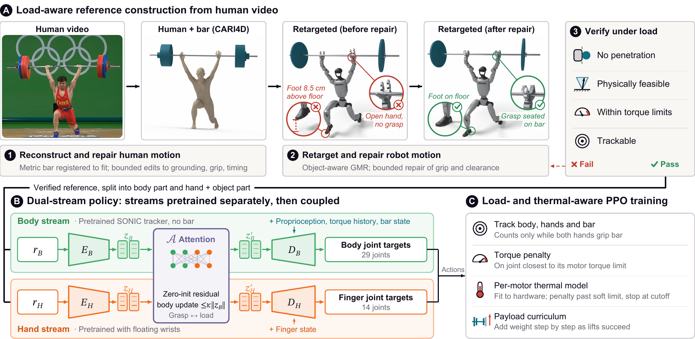
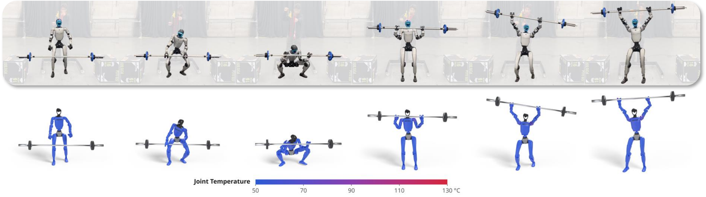

Overview
Heavy lifting breaks pure imitation.
Humanoid motion trackers now reproduce diverse human motion on real hardware, yet whole-body loco-manipulation remains limited to light objects and largely non-dexterous interaction. Heavy prehensile lifting exposes the limits of pure imitation: human demonstrations provide only kinematic references, and under load the embodiment gap between human and humanoid drives the robot's weakest actuators into torque saturation and thermal shutdown.
MuscleMan constructs dynamically feasible references from human videos, couples separately pretrained whole-body and dexterous-hand priors in a dual-stream policy, and trains it to avoid overloading and overheating its motors under a progressive payload curriculum. On a Unitree G1 with Dex3-1 hands it autonomously clean-and-jerks a commercial barbell from 6.8 kg up to 20.4 kg.
The workshop paper reports the 11.3 kg (25 lb) lift, judged by criteria adapted from Olympic weightlifting rules; the 15.9 kg and 20.4 kg lifts came after it.
Real hardware
From the empty bar to 45 lb.
Every lift is autonomous and shown at real-time speed. The bar alone weighs 6.8 kg; a spotter stands behind the robot for safety.
When it goes wrong
Heavy lifts fail in physical ways: a motor overheats, a grip slips, the bar runs away.
Method
Human motion as a prior, not a target.

Load-aware reference
We reconstruct an Olympic gold medalist's competition clean and jerk from video (CARI4D), retarget it to the G1 with Dex3-1 hands (object-conditioned GMR), and refine it to minimize the normalized peak joint torque under load, keeping only references that a physics verifier confirms are feasible.
Dual-stream policy
A body stream (warm-started from the SONIC whole-body controller, 29 joints) and a hand stream (pretrained on floating Dex3 hands, 14 finger joints) are coupled by a single zero-initialized residual attention block, then fine-tuned together on the lift.
Load- and thermal-aware training
PPO with object-tracking rewards, a smooth-max penalty on the most loaded motor, and a motor thermal model fitted to hardware logs (penalty above 100 °C, shutdown at 130 °C), under a payload curriculum that grows in 0.5 kg steps.
Results in simulation
Only the full recipe lifts heavy.
Success rate over 64 deterministic episodes per payload in Isaac Lab, after 12,500 training iterations (workshop paper, Table 1).
| Configuration | 0.5 kg | 6.8 kg | 9.1 kg | 11.3 kg | 13.6 kg |
|---|---|---|---|---|---|
| MLP | – | – | – | – | – |
| SONIC + binary grasp | 79.7 | – | – | – | – |
| GRAIL, pretrained hierarchy | – | – | – | – | – |
| GRAIL, SONIC prior | 59.4 | – | – | – | – |
| MuscleMan | 60.9 | 59.4 | 45.3 | 20.3 | – |
| w/o reference refinement | – | – | – | – | – |
| w/o task pretraining | 59.4 | – | – | – | – |
| w/o mass curriculum | – | – | – | – | – |
| w/o thermal training | 84.4 | 23.4 | 17.2 | – | – |
Imitation alone does not lift.
Without reference refinement no lift succeeds at any load. At 11.3 kg, GRAIL tracks the body reference more closely (0.10 vs 0.42 rad joint error) yet completes no lifts.
Heat is the hidden limit.
Without thermal training, success falls to 0% at 11.3 kg. At that load, thermal training lowers the mean peak motor temperature from 97.8 to 76.9 °C and overheat shutdowns from 12.5% to 3.1%.
Pretraining and the curriculum unlock load.
Without task pretraining the policy lifts only the 0.5 kg load; without the payload curriculum it lifts nothing.

Simulation, rendered
Every frame is a simulated rollout.
Poses recorded from deterministic evaluation episodes of trained policies in Isaac Lab, re-rendered in Blender Cycles. Nothing is keyframed by hand.
Beyond the barbell · ongoing work
The same recipe, other heavy objects.
Simulation results from our current runs. At the heaviest loads only some evaluation episodes succeed; we show successful ones.
Citation
BibTeX
@inproceedings{he2026muscleman,
title = {MuscleMan: Humanoid Whole-Body Control for Heavy-Object Prehensile Interaction},
author = {He, Haoyang and Karhade, Jay and Khanna, Karan and Zhou, Jinyao and Iyer, Abhishek and
Scherer, Sebastian and Peng, Xue Bin and Patrikar, Jay and Kim, Dong-Ki and Omidshafiei, Shayegan},
booktitle = {CoRL 2026 Workshop on Contact-Rich Loco-Manipulation},
year = {2026}
}